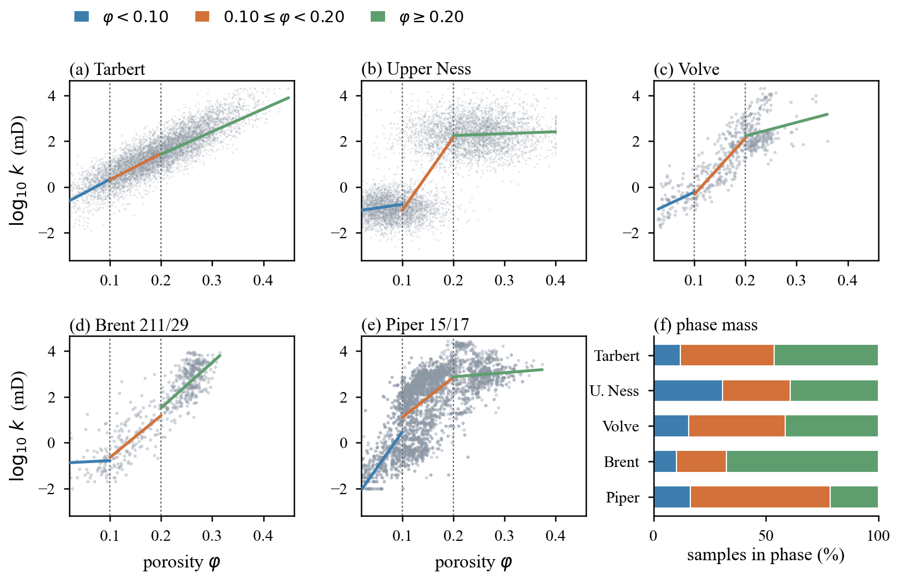
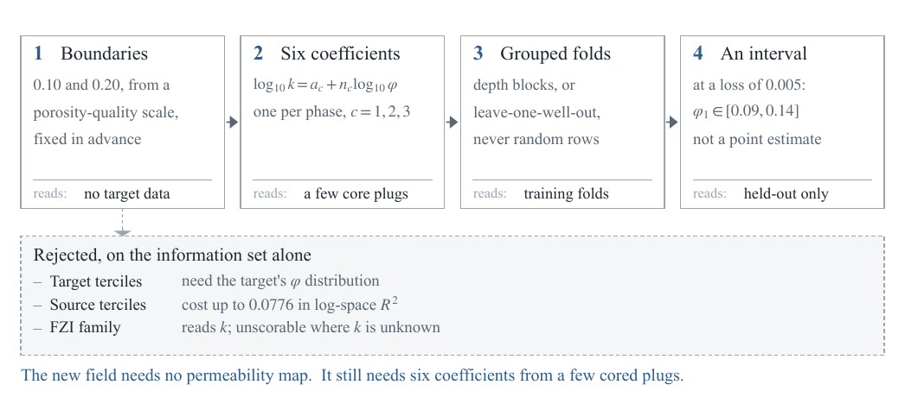
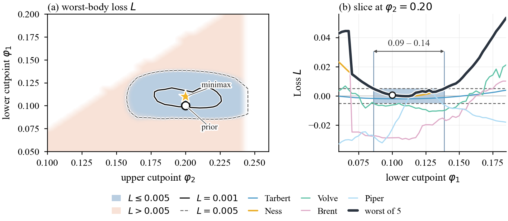

951
pairs searched, K fixed at 3, six parameters throughout
Permeability from porosity in three phases, with the phase boundaries fixed in advance and never fitted.
Five public bodies, one of which ships with the package. One power law per porosity phase, six free parameters, and a baseline that does not read the answer it is scored against. The package reproduces every number the paper prints, down to the last digit, from the archives or from the one body that ships with it.
Most permeability correlations are scored against a baseline built from the very quantity being predicted. The usual one is the flow zone index, and it cannot be computed without k.
The flow zone index is RQI / φz with RQI = 0.0314 √(k / φ). It is a genuinely useful grouping variable, and it is also a function of the target. Any accuracy advantage it shows over a porosity-only model is therefore not evidence about prediction: the information was supplied rather than inferred. Here the baseline sees porosity and nothing else, and the three phase boundaries sit at fixed porosities — 0.10 and 0.20 — chosen before any body is scored and never re-optimised inside the folds.
What remains is a deliberately small model: three phases, one power law in each, six free parameters, fitted by ordinary least squares in log space. Its job is not to win a leaderboard. It exists so that a claim about transferability can be stated without the target leaking into the thing that measures it.

No hydraulic flow units are assigned, and no rock type is named. The phases are porosity intervals, nothing more.
R² in k space is reported as a diagnostic. It is not used to order the five bodies against each other.
Nothing here replaces core description. The model says what porosity alone carries, and stops there.
The model is small because the protocol forbids it from being larger. Each step below names what it is allowed to read, and the last panel names the alternatives that were rejected on that basis alone.

Two consequences follow, and they are worth stating plainly because both are easy to read as a weakness. First, the cutpoints are not estimated: they are fixed at 0.10 and 0.20 from a porosity-quality scale, before any body is scored, so no fold can tune them. Second, the contribution is a range, not a point: at a tolerance of 0.005 in loss, the admissible lower cutpoint spans φ1 ∈ [0.09, 0.14]. A paper that reported a single optimum would be claiming a precision this design cannot defend.
The last line of the figure is the one a practitioner cares about: a new field needs no permeability map, but it does need six coefficients from a few cored plugs. That is the whole deployment story, and it is deliberately modest.
Nothing here is fitted that could have been fixed, and nothing is fixed that the data could have decided. The design rule, in one sentence
| Body | n | Prior 0.10/0.20 | Terciles fitted | RMSE / σ |
|---|---|---|---|---|
| SPE 10 Tarbert | 100 000 | 0.7355 | 0.7336 | 0.5143 |
| SPE 10 Upper Ness | 100 000 | 0.6634 | 0.6641 | 0.5802 |
| Volve 15/9-19A | 557 | 0.7207 | 0.7145 | 0.5285 |
| Brent 211/29 | 586 | 0.7430 | 0.7143 | 0.5070 |
| Piper 15/17 | 4 428 | 0.4868 | 0.4642 | 0.7164 |
The two grid bodies are scored on a fixed 100 000-point subsample. Columns three and four differ by at most 0.029 — fitting the boundaries buys almost nothing, so fixing them costs almost nothing.

Three claims are load-bearing, and each is one run away. None of them requires the full archives.
Volve 15/9-19A comes with the code: 557 core plugs, full input, so the whole chain runs on a clean machine with no download and no credentials. The other four are other people's data and need the archives described in DATA.md; none of them is redistributed here.
$ python -m zeroleak verify --config configs/base.yaml # 557 predictions scored first, then one line per reference file file status detail index.csv ok volve_15_9_19a__prior.config.json ok volve_15_9_19a__prior.metrics.csv ok volve_15_9_19a__prior.pred.csv ok ... three more, then verify: all files match expected/
Twenty draws, each with its own subsample seed and fold offset. The offsets are listed in the source rather than generated, because the sentence “the boundaries move by 1–59 cells” admits many sequences of twenty points, and only one of them produced the printed table.
| Body | Baseline | Mean | SD | Min | Max |
|---|---|---|---|---|---|
| SPE 10 Tarbert | −0.00206 | −0.00183 | 0.00026 | −0.00224 | −0.00124 |
| SPE 10 Upper Ness | +0.00032 | +0.00056 | 0.00015 | +0.00024 | +0.00079 |
| Volve 15/9-19A | −0.00630 | −0.00632 | 0.00272 | −0.01328 | −0.00201 |
| Brent · Piper | −0.02863 · −0.02262 | unchanged | fixed | unchanged | unchanged |
# Python 3.11 · numpy 2.4.4 · nothing below needs the network # run from inside zeroleak-1.1.0/, the directory the archive unpacks to pip install -e ".[test]" # reproduces the table from the body that ships with the package python -m zeroleak run --config configs/base.yaml # the same, then a cell-by-cell diff against the reference output python -m zeroleak verify --config configs/base.yaml # all five bodies (~5 s), the 951-cell scan (~3.5 min), twenty draws (~25 s) export ZEROLEAK_DATA_DIR=/path/to/archives # layout in DATA.md python -m zeroleak run --config configs/full.yaml python -m zeroleak scan --config configs/full.yaml python -m zeroleak noise --config configs/full.yaml python -m pytest # 80 passed
Eighty of them, and the interesting ones are the ones that must fail: the verifier is handed an altered reference and required to exit non-zero, and the loss sign is reversed to confirm a named assertion breaks. A checker that can only print ok moves the burden of proof onto the reader without giving them anything to push against.
@software{zeroleak_2026,
title = {zeroleak: permeability from porosity in three phases,
with fixed cutpoints},
version = {1.1.0},
year = {2026},
publisher = {Zenodo},
doi = {10.5281/zenodo.XXXXXXX}
}